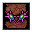

肉塊の覚醒 Awaken Flesh
英語版 CrawlWiki の記事「Awaken Flesh」(0.34 向け、2026-07-16 版)の翻訳です。原文の著者は編集履歴をご覧ください。
|  肉塊の覚醒 | |
|---|---|
| 詠唱の騒音 | 6 |
| 呪文の騒音 | 0 |
| 射程 | LOS |
| フラグ | 混沌(Chaotic)、モンスター専用(Monster) |

| 術者の視界内にある肉の山それぞれに混沌のエネルギーを奔流のごとく注ぎ込み、強化された大型の忌まわしきものとして動き出させる。その際、不運にも肉塊の隣に立っていた敵には混沌のダメージを与える。 |
肉塊の覚醒はモンスター専用の呪文だ。肉塊の矢で作られた肉の山を爆発させて周囲3x3に混沌のブランドのダメージを与え、大型の忌まわしきものを生み出す。この大型の忌まわしきものは、つきうる3つの永続的な強化(加速、怪力、再生)をすべて備えている。
肉塊の覚醒を唱える敵は次のとおり。
- K
 コボルドの肉細工師(ダメージ3d14)
コボルドの肉細工師(ダメージ3d14)